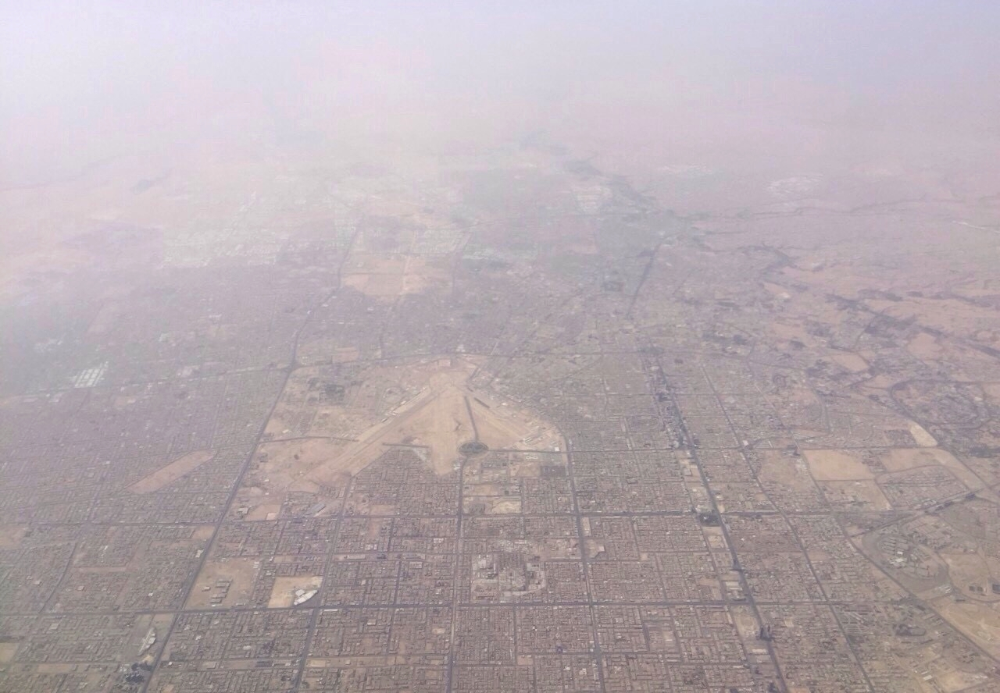

Vol. I · No. 137 · Monday, October 12, 2026 · 11 items · 9.6 min read
Riyadh’s airport is hit again and the oil chiefs stay home, while Washington declares a truce Moscow never confirms.
News · Riyadh · cross-spectrum LLLCLRR
Riyadh’s airport is hit a fourth time in five days, and the oil majors’ chiefs stay away

King Khalid International Airport, Riyadh. Wikimedia Commons
A projectile struck the passenger terminal at Riyadh’s King Khalid International Airport again on Sunday evening, killing a Pakistani national and wounding 11, the Associated Press reported. It was the fourth attack on the airport in five days. It has been closed since Saturday, when a missile killed 12 and wounded more than 300; an Indian citizen died of his wounds on Sunday, raising that toll to 13. An American was among the dead. King Fahd International in Dammam was also attacked. The claimed the Riyadh strikes and declared a blockade on the kingdom.
There is no way that somebody will break our back.
Prince Abdulaziz bin Salman, Saudi energy minister, to the Associated Press, October 11
The money moved first. The chief executives of ExxonMobil, TotalEnergies, Shell, Chevron and BP were dropped from the agenda of the , which opened Sunday about 10 kilometers from the airport, Reuters reported Monday. BP cited “travel disruption.” Bloomberg reported that Riyadh’s financial district has moved to remote work ahead of the and that the government now projects the economy will shrink 3.6 percent this year.
The kingdom is short of and has asked France, Britain, Pakistan and Egypt for air defense help, the AP said. Asked whether the United States would join strikes on the Houthis, President Trump said, “We may. We’re going to look at it,” Fox News reported. Yemen’s Houthi-run health ministry said a child was killed in a suspected Saudi strike on a house in .
News · Washington and Kyiv · cross-spectrum LLLCLRR
Trump declares an energy ceasefire in Ukraine, and Washington threatens Kyiv’s intelligence and weapons over refinery strikes
President Trump posted on Sunday morning: “Effective immediately, there is an ENERGY in the War between Russia and Ukraine. Both parties have agreed. Do not break it!” He gave no terms. Volodymyr Zelenskyy said Ukraine supports a ceasefire and is “awaiting details from the American side,” and the BBC reported he said Russia struck a power plant in Kharkiv right after the post. Moscow did not confirm the truce.
The pressure ran toward Kyiv. State Department and Pentagon officials warned Ukraine and European capitals over the weekend that the United States could suspend and European purchases of American weapons through unless Ukraine stops deep strikes on Russian refineries, CNN reported, confirming the Financial Times. Patriot interceptors would be hit hardest. Zelenskyy has said Ukraine would stop hitting refineries if Moscow stopped targeting Ukrainian power plants, Fox News reported.
Law · New York · cross-spectrum LLC
A federal judge orders Homeland Security to pull $20 million of television ads, and stays the budget office’s release of the money
Judge Jennifer L. Rochon of the Southern District of New York on Sunday stayed a September 20 purchase order between Customs and Border Protection and LMD Agency, along with the Office of Management and Budget’s $20 million for the ads, and barred any use of Homeland Security funds on them. The order, effective at 6:45 p.m., required that evening’s airings to be cancelled and binds the agency placing them. It runs 14 days, to October 25, with no bond and a compliance report due within 24 hours.
The plaintiffs are , an Alabama House candidate, Robert Hunter, and the SEIU’s Local 32BJ with its political action committee. Rochon found them “likely to succeed on the merits” and ruled under ; a full opinion will follow. The Justice Department had argued the ads would “end tomorrow,” the Associated Press reported.
AI
The brake, specified
AI · London
Microsoft’s Brad Smith says a washing machine faces more safety rules than AI, and asks for mandatory incident reports
Brad Smith, Microsoft’s president, in Seattle in 2016, during a visit by the then defense secretary, Ash Carter. Wikimedia Commons
Brad Smith, Microsoft’s vice chair and president, called Monday for “urgent global regulation” of AI, with independent evaluators vetting new models before release, Reuters reported from London. He wants a legal duty to tell a “victim” when a rogue AI agent breaches their system, an “emergency brake,” and mandatory . “Right now, your washing machine is subject to more safety rules than AI,” he said. He named Britain, and its , as best placed to lead; the AI minister, Kanishka Narayan, told Reuters Britain would consider regulating advanced models if the current system proved insufficient.
The deployer’s side answered on Sunday. , Palantir’s chief technology officer, told CBS’s Face the Nation that AI should be regulated application by application through existing agencies. A defective product is “the car maker’s problem,” he said. Asked about the Pentagon dropping Anthropic’s products: “No impact.”
Markets & Deals
A chip strategy at $7 billion
Corporate · Seattle and Tel Aviv
Amazon is in talks to buy Decart for about $7 billion, a month after Anthropic walked away from it
The Spheres at Amazon’s Seattle headquarters. Wikimedia Commons
Amazon is negotiating to Decart, an Israeli AI startup, for about $7 billion, The Wall Street Journal reported Sunday, and a deal could come soon if talks hold. Decart was valued at nearly $4 billion in May, when it raised $300 million in a round led by that Nvidia joined. Amazon declined to comment.
Anthropic got there first. It explored a deal at about $6 billion in August and dropped it last month after due diligence, Bloomberg reported. Decart, founded in 2023, makes Lucy, a real-time video editor; Oasis, which simulates worlds for training robots and cars; and software that moves models between different makers’ chips. Amazon Web Services gave it early access to last year. Calcalist reported that Decart’s commercial business is far smaller than the price.
Corporate · New York
Cash Treasuries close for Columbus Day with the 20-year yielding more than the 30-year, and CPI due Wednesday
The bond market is shut Monday while . Treasury’s par curve last closed Friday with the two-year at 4.80 percent, the 10-year at 5.24, the at 5.65 and the 30-year at 5.60. Economists polled by Reuters expect September consumer prices up 0.6 percent on the month and 3.7 percent on the year, core 2.5. Futures price an 18 percent chance of a hike this month and 85 percent by December.
Law & the Courts
Sanctions on appeal
Law · South Florida · West Palm Beach and Washington
Trump asks the Supreme Court to revive his racketeering suit against Hillary Clinton and erase a sanction of nearly $1 million
The Supreme Court in Washington. Wikimedia Commons
Donald Trump has asked the justices to reinstate the suit he filed in March 2022 against Hillary Clinton, the Democratic National Committee, Perkins Coie and others, SCOTUSblog reported Sunday. Judge Donald dismissed it as untimely, found much of the alleged speech “plainly protected by the First Amendment,” and ordered Trump and his lawyer Alina to pay nearly $1 million. The Eleventh Circuit affirmed both in an opinion by Chief Judge William Pryor.
The petition, filed Friday, asks whether the limitations period should be for a sitting president’s “unique role,” and whether courts may sanction a president and his lawyers for pressing a “substantial, unresolved” tolling argument. Richard Klugh is counsel of record. Clinton’s response is due 30 days after docketing, so the court is unlikely to act before winter.
The World
Hormuz, half answered
News · Tehran and the Gulf of Oman · cross-spectrum LCR
Iran says Washington accepted some of its Hormuz conditions but not enough, as American jets disable a blockade runner
Mohsen Rezaei, secretary of Iran’s , said Sunday the American reply to Tehran’s for reopening the Strait of Hormuz was insufficient. “In their response, they have accepted some of our conditions, while others remain unclear,” he told state media. The strait stays shut until all are met. The reply went through Qatari intermediaries, Reuters reported.
Enforcement continued. Central Command released footage of a jet bombing the stern of a Panama-flagged cargo ship in the Gulf of Oman. Since mid-July the blockade has disabled four vessels, turned back 135 and destroyed ten Iran-linked tankers. Kpler put traffic at about 8.5 million barrels a day in the week to October 7, roughly 40 percent below normal. The Revolutionary Guards’ navy said an unnamed supertanker struck a mine after using an “unauthorized route.”
News · Jalisco, Mexico · cross-spectrum LLC
Hurricane Simon runs along Mexico’s Pacific coast without landfall, near the trigger on a $175 million catastrophe bond
Simon peaked as a Category 4 with 155 mph winds and tracked parallel to the Jalisco coast instead of coming ashore; it was a Category 3 at 120 mph late Sunday. No deaths were reported. President Claudia Sheinbaum told residents of four states to stay sheltered, and Puerto Vallarta’s airport closed. The storm’s central pressure bottomed near 932 millibars, the trigger level of a World Bank covering Mexico’s Pacific coast, but sources told Artemis no occurred.
Entertainment & EASL
What counts as a bet
Culture · New York
Sports now drive more than 80 percent of Kalshi’s trading, and football season is testing what counts as a bet
More than 80 percent of Kalshi’s volume in September came from sports, Bloomberg reported Sunday. , bundled trades that pay only if every leg hits, were 65 percent of its volume last week and 53 percent of ’s. Piper Sandler puts Kalshi’s combo volume at about $1.36 billion on heavy football days, against about $900 million for the whole of last NFL regular season. Kalshi is weighing a public offering after a round that valued it at about $40 billion.
The fight is over the label. As federally regulated , the platforms pay no state gambling tax, which is 51 percent in New York, and skip sportsbook age and location limits. At least 44 states call the contracts illegal gambling, and the CFTC has sued states. Senators Elizabeth Warren and John Curtis asked the CFTC’s chairman, Michael Selig, for supervision records and flagged Donald Trump Jr.’s ties to both platforms.
Culture · London
The DP World Tour will refuse 2027 membership to anyone who signs with LIV’s reorganized tour
Guy Kinnings, the tour’s chief executive, told the BBC that any player who signs with the restructured LIV will be refused DP World Tour in 2027, and that a false disclosure of a player’s plans is grounds for termination. About 15 LIV players hold tour status, and only members can play for Europe in the 2027 Ryder Cup at Adare Manor. LIV’s court-supervised deadline is October 25; the tour’s is November 16.
Compiled by Matthew Yellin · mattyellin.com · Est. May 2026 · A cross-spectrum brief drawn each morning from wires, filings, and the trade press